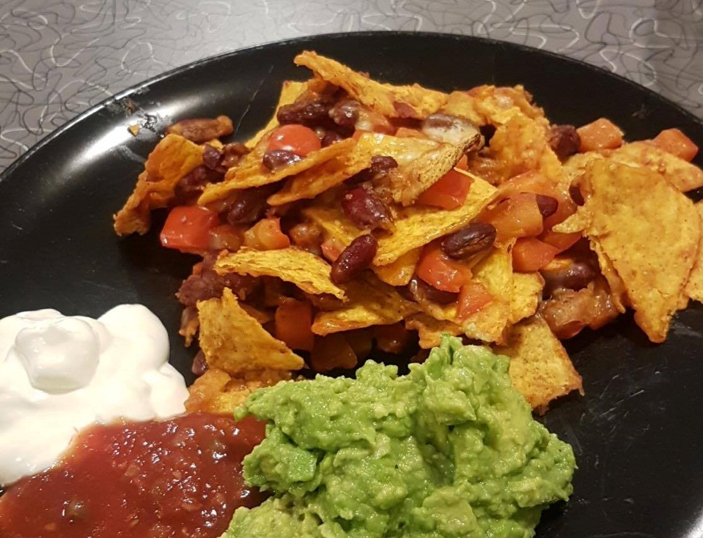
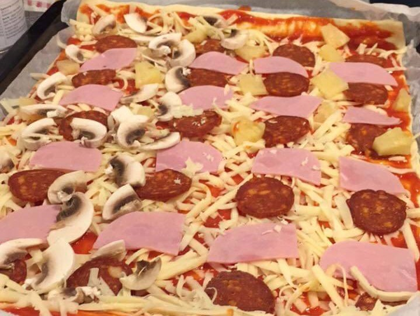
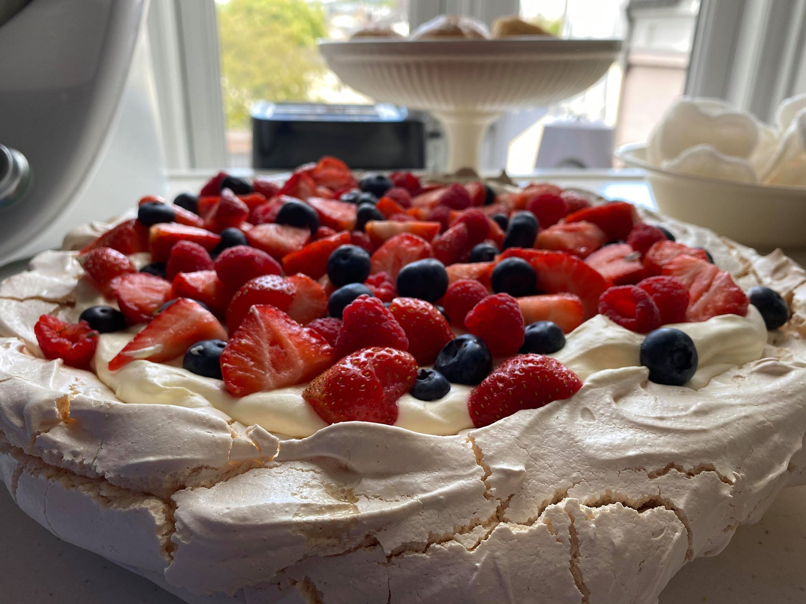

Nachos med fyll
Nachos er noe som alle liker og et godt alternativ til fredagstacoen. Dette er en skikkelig god versjon med guacamole, rømme og salsa.

Langpannepizza
Hjemmelaget pizza smaker alltid mye bedre enn frossenpizza. Denne versjonen er toppet med pepperoni, sopp, skinke og ananas!

Pavlova med friske bær
Pavlova er en enkel kake å lage. Den har en deilig marengsbunn som er sprø på utsiden og myk og seig inni. Dette toppes med deilig vaniljekrem og friske bær.